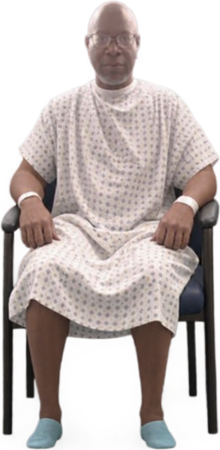
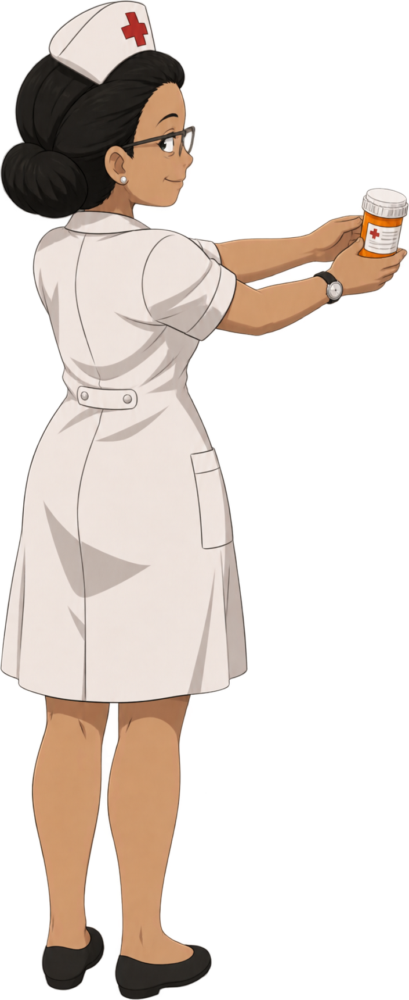

Welcome NURS-102 Class
please choose the first module you would like to begin with.
3
Understanding Culture & Diversity
Communication & Relational Practice
Cultural Safety in Nursing
Group 1 (Chapters 7, 8)
- Neige Kerr
- Jvhan 67
- Gurjeevan Mattu
- Damanpreet Sidhu
- Victoria Ude
- Maddix Burgess


Return
Pop the bubbles for easy questions, and catch the fish for harder ones!
Bubbles are worth 1 point and fish are worth 2. Keep your streak going!
3
2
1
Help the nurse decide what she should do next!
Patient
Nurse, I can't catch my breath! I'm feeling really short of breath!